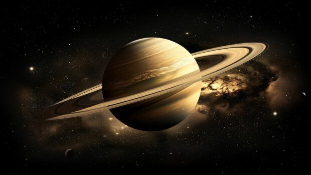
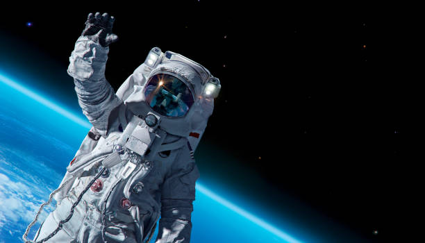

Today, our rocket is getting ready to travel across space.
This rocket will take us to a new planet.

We are heading to Saturn, the planet with beautiful rings!

Our brave astronaut will explore the surface of Saturn and send back amazing photos!